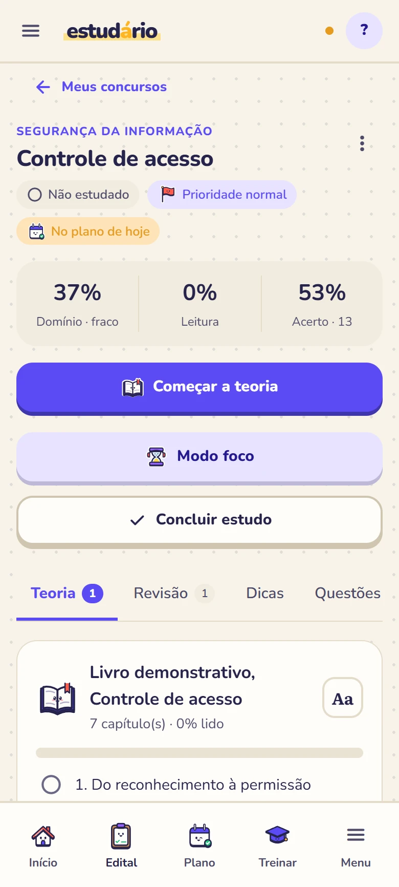
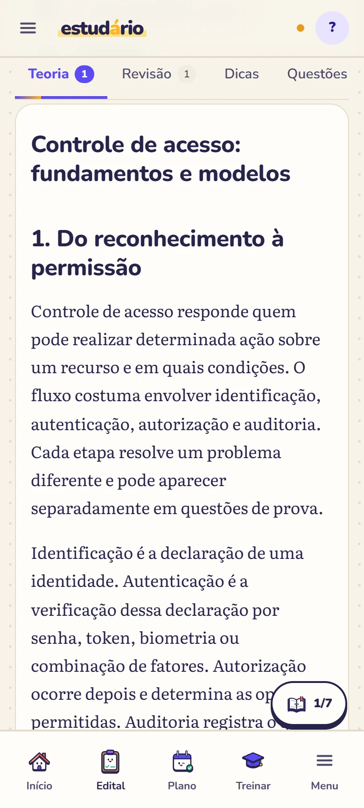
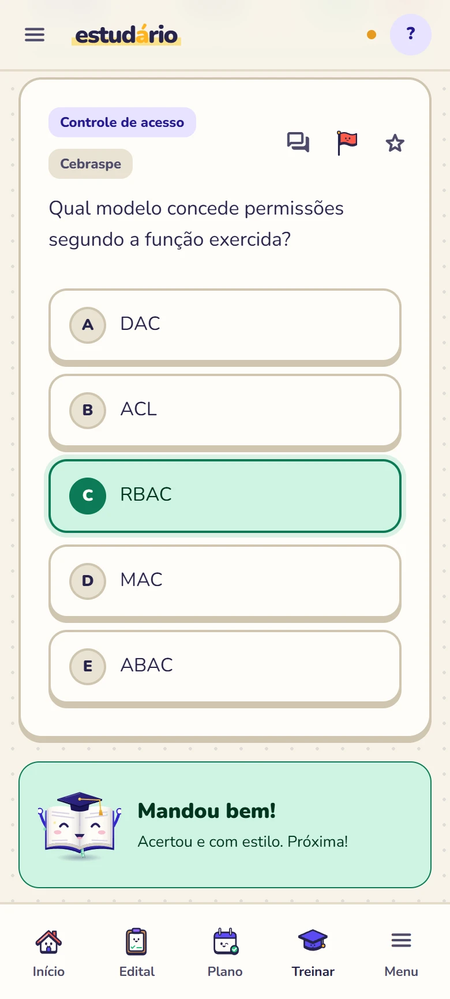
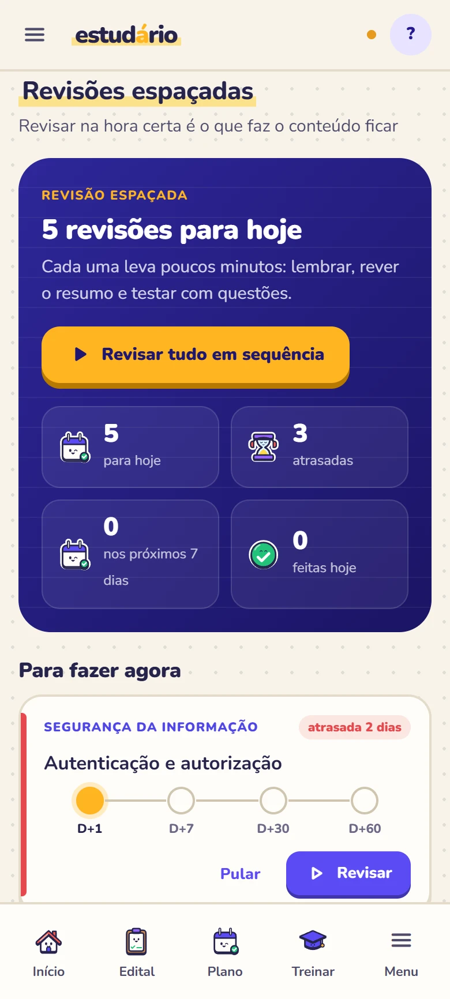
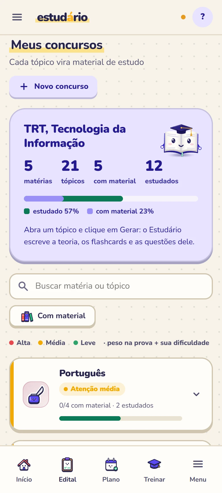

Seu concurso não está no catálogo? Mande o edital.
Prefeitura pequena, conselho de classe, autarquia que ninguém cobre: não importa. Você envia o PDF do edital e o Estudário monta tudo em cima dele, do mesmo jeito que faz com os 4 mil editais do catálogo.
- 1Lê o conteúdo programáticoSepara cada matéria e cada tópico como estão no seu edital.
- 2Monta o plano até o dia da provaDistribuído pelo seu tempo por dia e pelo peso de cada matéria na prova.
- 3Material e questões de cada tópicoTeoria, resumo, flashcards e questões comentadas no estilo da banca, só do que o seu edital pede.
- 4Simulados no formato da sua provaCom nota por matéria, para saber onde ainda falta.
Incluído no Essencial (2 editais por mês) e no Pro (5 por mês). Cancele quando quiser.
Por que estudar aqui
Seu tempo vai para o estudo, não para a organização.
Quem estuda para concurso perde horas montando cronograma, caçando material e decidindo o que revisar. Aqui isso já chega pronto.
Montar cronograma em planilha
O plano sai do seu edital
Você escolhe o concurso entre mais de 4 mil editais e o plano já vem com as matérias na proporção em que caem na prova. Não achou o seu? Nos planos pagos, você envia o PDF do edital e o plano sai dele.
Caçar PDF e videoaula de cada assunto
O material já está no tópico
Mais de 8 mil matérias escritas a partir da lei e de fontes oficiais, com resumo, flashcards e as pegadinhas mais comuns.
Fazer questão solta, sem saber por que errou
Questão com explicação, no estilo da banca
Mais de 1 milhão de questões, cada uma com explicação, para você treinar do jeito que a banca do seu concurso costuma cobrar.
Como funciona
Quatro passos, e do terceiro em diante é a sua rotina.
Escolha o edital
Procure pelo órgão, cargo ou sigla no catálogo. Se o seu não estiver lá, mande o PDF e as matérias saem organizadas.
Conte sua rotina
Quanto tempo por dia, quais dias e a data da prova. O plano usa isso e o peso de cada matéria no edital.
Estude o tópico do dia
Teoria em capítulos, resumo, flashcards, dicas e pegadinhas. Grife o que importa e anote na margem.
Treine e revise
Questões comentadas logo depois da teoria, e o tópico volta nas revisões para não ser esquecido.
Recursos
Tudo o que a preparação pede, num lugar só.
Plano
Um plano que cabe na sua semana
Mostra o que estudar em cada dia, alterna as matérias pelo peso e coloca as questões logo depois da teoria do mesmo tópico.
- Se você atrasar, você decideFaça na hora, encaixe nos próximos dias ou empurre o plano. Nada do que você já fez se perde.
- Previsão honestaMostra em que dia o edital inteiro é visto no seu ritmo e avisa quando não cabe até a prova.
Material
O conteúdo de cada tópico, com as fontes no fim
Teoria em capítulos, resumo, flashcards, dicas e as pegadinhas mais comuns. Lei e conteúdo vêm de fontes oficiais, listadas para você conferir.
- Leitura com cara de livroFonte de livro, tamanho de letra do seu jeito e uma linha fina mostrando quanto falta.
- Grife e anoteOs grifos vão para o seu caderno de estudo e levam de volta ao ponto exato da teoria.


Questões
Questões no estilo da sua banca
São mais de 1 milhão de questões, e cada alternativa tem explicação, inclusive as erradas. A ordem das alternativas muda a cada vez, para você aprender o conteúdo e não a posição da resposta.
- Caderno de errosSepara o que você errou pelo conceito, para você ver o que realmente falta.
- SimuladosCom cronômetro e nota por matéria, no formato do seu concurso. Nos planos pagos, mais de 280 provas completas já montadas por edital.

Revisões
O que você estudou volta na hora certa
Cada tópico estudado volta no dia seguinte, em 7 e em 30 dias. Na revisão você relembra os pontos principais, revê o resumo e faz algumas questões para fixar.
- Só no dia certoRevisar antes da hora enfraquece o efeito; o app espera o dia e avisa quando chega.
- O edital inteiro à vistaMatérias e tópicos na ordem do edital, com o que pesa mais na prova em destaque.


Onde usar
No celular e no computador, com a mesma conta.
Estude no ônibus pelo app e continue em casa, no computador ou no tablet, do ponto onde parou.
App para Android
Para estudar em qualquer lugar.
- Sem internet
- Leitura, plano, questões salvas e revisões funcionam offline.
- Lembretes
- Avisa a hora de estudar, as revisões e o que ficou atrasado.
- Modo foco
- Cronômetro que avisa quando o tempo planejado acabou.
- Sequência e conquistas
- Para manter o ritmo todo dia.
- Backup
- Cópia na sua conta e, se quiser, no Google Drive.
No navegador
Em app.estudario.com.br, no computador, tablet ou celular.
- Leitura ampla
- Teoria, tabelas e fórmulas com espaço, e o sumário à mão.
- Grifos e notas
- Selecione o trecho e ele vai para o caderno de estudo.
- Pelo teclado
- A a E (ou 1 a 5) marcam a alternativa; Enter confirma.
- Material pronto
- Troque de aba enquanto o material é preparado; o site avisa.
- Sincronizado
- Plano, edital e progresso iguais aos do celular.
Tem iPhone? Use pelo navegador, em app.estudario.com.br, com tudo o que o site tem. O app para iPhone está nos nossos planos.
Quem estuda com você
Esse é o Folha.
Um livrinho de capelo que acompanha o seu estudo: avisa quando o tempo planejado acabou, comemora os acertos e diz o que vem a seguir. Com as conquistas, você libera peças para o armário dele: são 306, em 13 categorias, de chapéus e óculos a companheiros e auras.
Humor
Visual
Planos
Comece grátis. Assine quando quiser ir além do plano.
No grátis, você estuda 2 matérias novas por dia no plano, com revisões, treino e caderno. Nos planos pagos, o plano anda mais rápido, você estuda vários concursos ao mesmo tempo e faz o Simulado do edital.
Grátis
Para estudar no seu ritmo.
R$ 0
para sempre
- Estudo
- Matérias novas por dia2
- Matérias extras, fora do plano—
- Concursos ao mesmo tempo1
- Revisões, treino e caderno✓
- Questões
- Lotes de 10 questões3/mês
- Simulados de 30 questões1/mês
- Treino aleatório e por matéria—
- Edital
- Simulado do edital, com ranking—
- Importar edital pelo PDF—
Essencial Mais escolhido
Para ir mais rápido.
R$ 24,90 /mês
ou R$ 249 por ano
- Estudo
- Matérias novas por dia3
- Matérias extras, fora do plano5/mês
- Concursos ao mesmo tempo2
- Revisões, treino e caderno✓
- Questões
- Lotes de 10 questões10/mês
- Simulados de 30 questões4/mês
- Treino aleatório e por matéria—
- Edital
- Simulado do edital, com ranking3 provas
- Importar edital pelo PDF2/mês
Pro
Ritmo máximo, vários concursos.
R$ 49,90 /mês
ou R$ 499 por ano
- Estudo
- Matérias novas por dia4
- Matérias extras, fora do plano10/mês
- Concursos ao mesmo tempo4
- Revisões, treino e caderno✓
- Questões
- Lotes de 10 questões20/mês
- Simulados de 30 questões8/mês
- Treino aleatório e por matéria✓
- Edital
- Simulado do edital, com ranking3 provas
- Importar edital pelo PDF4/mês
O Simulado do edital é a prova do edital inteiro, igual para todos, com ranking: até 3 provas, cada uma liberada ao tirar a sua meta na anterior. Assine pela Google Play (Android); cartão e Pix pelo site chegam em breve. Cancele quando quiser. O plano vale no celular e no navegador, na mesma conta.
Posso usar o edital que eu tenho?
Sim. Nos planos Essencial e Pro, você envia o PDF do edital no app ou no site: o Estudário lê o conteúdo programático, separa as matérias e monta o plano a partir delas, com material e questões para cada assunto. O Essencial inclui 2 editais em PDF por mês e o Pro, 5.
Funciona para o meu concurso?
Procure o seu no catálogo, que tem editais de tribunais, polícias, bancos, controle, fiscal e outras áreas. Se não estiver lá, nos planos pagos você manda o PDF do edital e as matérias saem organizadas.
Precisa de internet?
Para estudar, não. Leitura, plano, questões salvas e revisões funcionam offline. A internet só entra para buscar material novo e para o celular e o computador ficarem iguais.
De onde vem o material?
Muitos assuntos já vêm prontos da biblioteca do Estudário. Os demais são escritos a partir de fontes oficiais, como a legislação e os órgãos públicos, e passam por uma segunda revisão antes de chegar até você. As fontes ficam listadas no fim de cada material.
Tem para iPhone?
Ainda não há app para iPhone, mas ele está nos nossos planos. Enquanto isso, abra app.estudario.com.br no Safari e entre com a sua conta Google: plano, edital, material e questões ficam lá, iguais ao app do Android. Em breve dá para assinar pelo site, com cartão ou Pix.
Dá para usar no computador ou no tablet?
Dá. Entre em app.estudario.com.br com a mesma conta Google do celular. O que você estuda em um aparece no outro sozinho.
Onde ficam meus dados?
No seu celular. Se você entrar com a conta Google, uma cópia fica na sua conta no servidor do Estudário, para o site mostrar o mesmo estudo; só você acessa essa cópia. Detalhes na política de privacidade.
Como cancelo a assinatura?
Pela Google Play, em Pagamentos e assinaturas. O plano continua até o fim do período pago e depois a conta volta para o grátis, sem perder o que você estudou.
Comece pelo edital do seu concurso.
Baixe grátis, escolha o edital e o plano da semana já fica pronto.